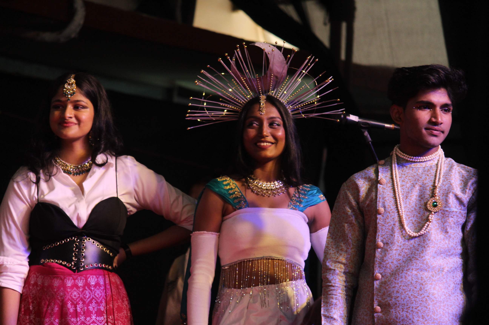
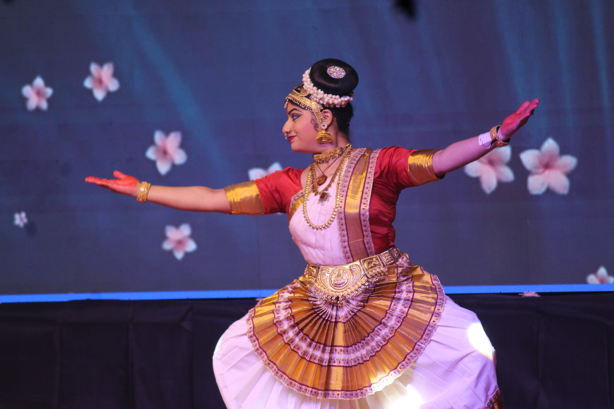

Visions: A Tradition of Student-led Triumphs
Visions is the annual inter-college fest of SIES College of Arts, Science, and Commerce, renowned for its long-standing tradition of excellence and vibrant participation. It has become a platform for showcasing cultural talent, encouraging creativity, and fostering collaboration among students. Over the years, Visions has earned a reputation for phenomenal fest management and an enthusiastic atmosphere, attracting participation from colleges across the city. The fest is much more than just competitions—it is a celebration of culture and camaraderie, uniting students, faculty, and alumni under one banner of shared enthusiasm. From enthralling performances to interactive games and workshops, Visions continues to set benchmarks for excellence in inter-college events.

New Beginnings, Limitless Possibilities
This year’s theme, Aarambh—meaning “new beginning”—marks a significant milestone as the fest is being hosted and organized by the Data Science department for the first time. Reflecting the spirit of innovation, Aarambh symbolizes the start of a new era, blending tradition with modernity. The theme sets the tone for an event full of transformative experiences, fostering fresh perspectives and dynamic participation. With competitions, cultural showcases, and celebrity appearances, Aarambh promises to deliver a vibrant and unforgettable experience. It embodies the vision of a brighter, innovative future, aligning perfectly with the spirit of the Data Science department's debut leadership.

SIES College of Arts, Science and Commerce(Sion,(W)):
A Beacon of Excellence
SIES College, established in 1960 and affiliated with the University of Mumbai, is a distinguished institution known for academic and cultural excellence. Over the years, the college has received prestigious awards for its commitment to nurturing talent and fostering innovation. The college’s dedication to holistic education ensures students excel not only in academics but also in extracurricular activities. With its state-of-the-art infrastructure and highly qualified faculty, SIES College has created a nurturing environment for personal and professional growth. It is a hub of cultural vibrancy, hosting events like Visions, which exemplify its emphasis on creativity and collaboration, ensuring students leave as well-rounded individuals ready to make an impact.